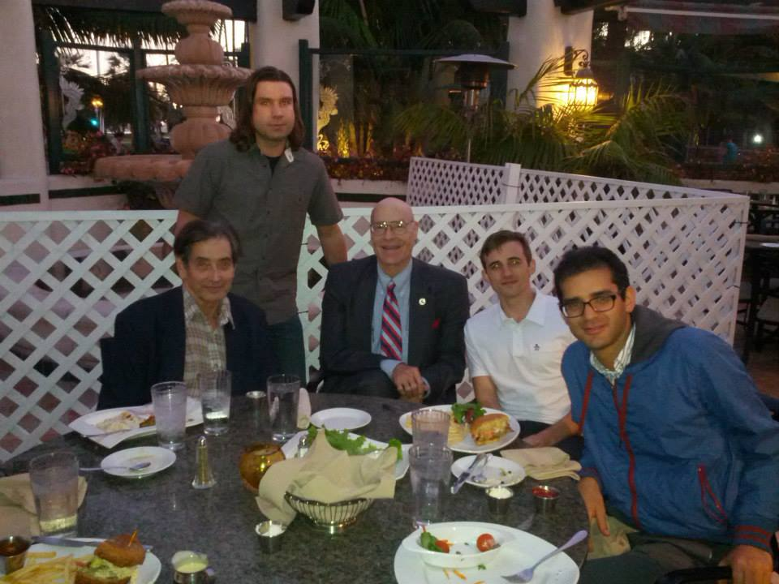

AI Storybook
- AI Storybook enables anyone to write and illustrate an original children's story in minutes.
StoryBot
- I built a conversational chatbot using GPT-3 to collect your preferences and write a story.
Wordsim
- I fell in love with natural language processing early on and was enchanted by the idea of getting a computer to understand meaning.
I built some models in Python that create vector representations of words that capture semantics by factoring word co-occurrence matrices.
This was before word2vec was published but operates on similar principles. I also worked with Russell McLoughlin
to build a language generation model based on Confabulation Theory.
Ph.D. in AI @ UC San Diego
- I joined Professor Robert Hecht-Nielsen's lab at the University of California, San Diego to study
artificial intelligence and neuroscience.
I built neural networks to simulate and study the function of the cerebellum.
I won an NSF scholarship to study in Japan where I collaborated with Professor Tadashi Yamazaki.
We proposed a "radical" theory that the cerebellum performs reinforcement learning.
I TAed Robert's popular course "Neurocomputing" (ECE 270 A-B-C) where we covered topics like multi-layer perceptrons, self-organizing maps, natural language processing, computer vision, etc.
Fun fact: Andrew Huberman taught my graduate neuroanatomy course.

Dinner with Robert Hecht-Nielsen, Stephen Grossberg and my lab mates, Mehrdad Yazdani and Geoff Gamble.
Undergrad @ Berkeley
- I went to UC Berkeley and studied mathematics and business administration. I interned at tech startups in the Silicon Valley,
Attributor and FirstToFile.
Trebuchet
- In high school, two friends and I built a trebuchet, a medieval siege weapon. We were advised by Dr. Robert Hecht-Nielsen,
who would become my friend, mentor and Ph.D. advisor.